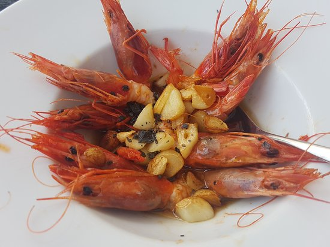

Platos Típicos y Restauración
La cocina de Guardamar destaca por dos ingredientes estrella: la ñora (pimiento seco aromático) y el langostino de Guardamar, además de los arroces marineros.
| Plato Típico | Descripción | Dónde Probarlo |
|---|---|---|
| Caldero del Campello de Guardamar | Arroz meloso cocinado con pescado fresco de bahía y alioli de ñora. | Restaurantes del Paseo Marítimo |
| Langostinos de Guardamar | Langostinos frescos a la plancha con sal gorda y aceite de oliva. | Marisquerías del centro y puerto |
| Arroz a la Alicantina | Arroz sabroso con magro, verduras de la huerta local y ñora picada. | Arrocerías tradicionales |

Mi Opinión
La gastronomía de Guardamar es sencillamente espectacular si te gusta la buena comida mediterránea. La calidad del marisco recién pescado e ingredientes como la ñora le dan un sabor único a todos sus arroces que no encuentras en otros lugares. Probar un caldero al mediodía junto a la playa en cualquier terraza del paseo es una actividad imprescindible para cualquier visitante que quiera disfrutar de la auténtica cultura alicantina.